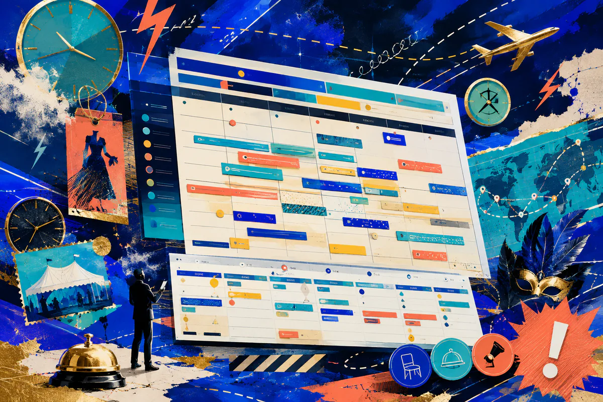

4 сайта5 остановок1 будущий проект
Юля, сайт долженустроитьБУМ!
Юль, я не предлагаю выбирать абстрактный «стиль». Я разберу четыре реальных примера, ты сразу отметишь, что берём по дизайну, функциям и тексту — а затем я добавлю то, чего не хватает event-агентству.
Маршрут Гордея для Юлии
Юль, смотрим. Разбираем. Сразу выбираем.
- 01 я показываю сильный принцип
- 02 ты выбираешь механику
- 03 вместе убираем повторы
- 04 я собираю единое ТЗ
После четырёх разборов
Смешиваем лучшееЮлия, какой громкости будет будущий сайт?
Юль, я собрал не пять шаблонов, а пять способов превратить выбранные принципы в цельный визуальный язык. Лично я рекомендую «БУМ! Управляемый праздник».
Добавить спецэффекты
Ещё громче, Юль?Выбирай отдельные визуальные приёмы
Моя главная дополнительная рекомендация
Живой календарь для ЮлииПраздник без накладок
Юль, я предлагаю снаружи показать простую доступность, а внутри собрать артистов, костюмы, реквизит, дорогу и подготовку. Ни один референс не решает эту задачу настолько полно.

интерактивныйпрототип ↓
Возможные подключенияGoogle CalendarOutlookCRMTelegramVKMAXКросс-постингКаждое подключение выбирается отдельно
То, что мы с тобой собрали
Юля, вот что получилосьЧерновик твоего технического задания уже живой
Основное направление
Что берём из разборов